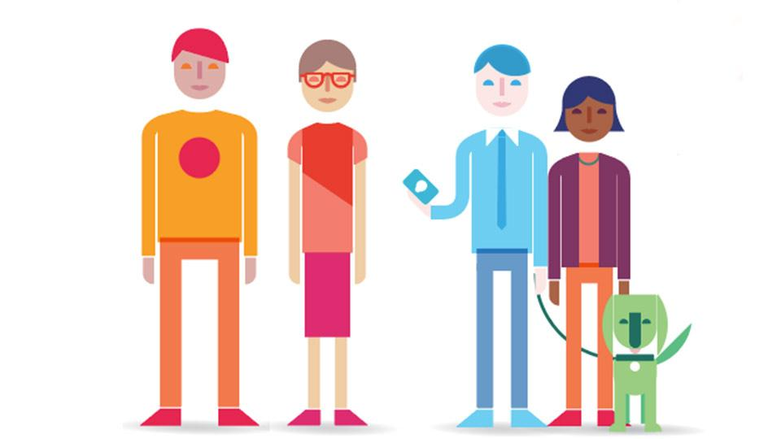

SilverCloud offers three CBT (cognitive behaviour therapy) programmes
tailored to your specific needs:
Programmes consists of seven or eight modules made up of information, videos,
quizzes and exercises. It is recommended to do one per week.
The goal of each module is for you to take the information and techniques learned and apply
them to their day-to-day life.
They are flexible and be accessed from anywhere (computer, tablet, phone)
any time of the day, including holidays.
You need to create an account with
SilverCloud.
This is held outside of Goldsmiths and no one at the university has access to your account or can
see how you are using it.
Goldsmiths only receives general information of how many students are using each part of the service.